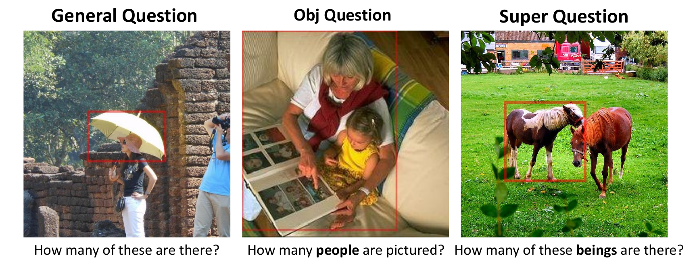
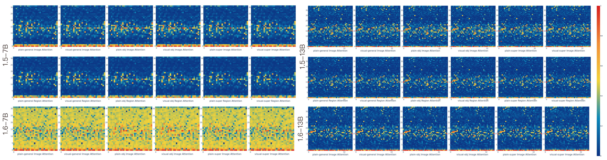
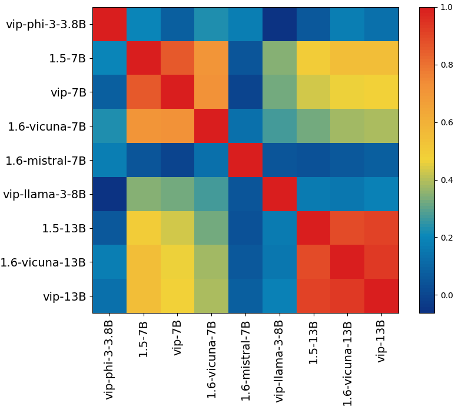
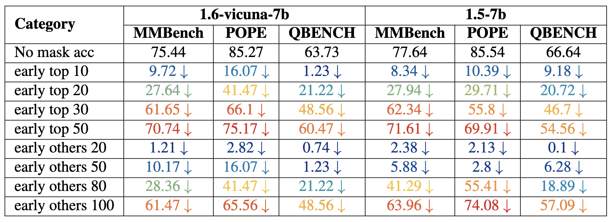
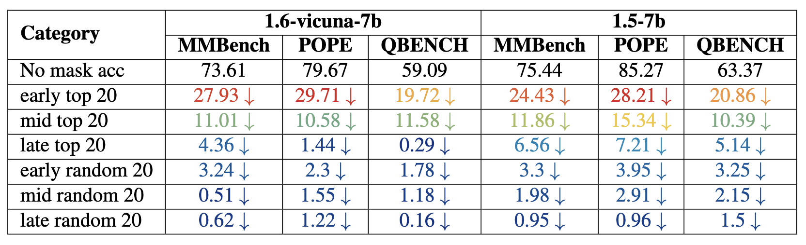

Method Overview

Example entries in the PointQA Dataset
PointQA includes three categories of questions, each designed to vary in complexity and focus : General
Questions: These prompt the model to identify objects within specified regions and count instances , testing
the model’s ability to recognize and count objects. Object-Specific Questions: These directly identify the
objects of interest, such as “How many people are in the picture?” This type assesses the model’s ability to
detect and count specific objects within a scene. Super Questions: These questions lack explicit object
names, requiring the model to interpret the scene broadly to infer the correct subject.

The image heatmap visualizes the total attention weight across image tokens and image
region tokens. Attention is concentrated in specific layers, particularly in the early and middle
layers. Comparing visual and plain generative tasks, we observe that the bounding box does not alter the
attention head patterns. However, when comparing with a plain object prompt, including the object name
in the question prompt activates additional attention heads not triggered by the visual prompt,
suggesting that the attention heads exhibit dynamic activation based on the context—whether visual or
linguistic. This highlights their ability to adjust their function and behavior in response to changing
inputs. Further comparison between versions 1.6 and 1.5 demonstrates an improvement in image attention
across all layers in version 1.6. However, this pattern is not as evident in the 1.6 13B model. The
region token attention is omitted in 1.6 due to the more complex handling of the input image, making it
challenging to track bbox token indices. Additionally, we see that the visual prompt does not improve
the attention head’s focus on specific regions, as evidenced by comparing the first and second rows of
the heatmap.
Attention Weight Analyze
We conducted 6 controlled experiments across various data and question configurations, varying two key
aspects:
• Attention guidance using visual cues, such as color bounding boxes (plain vs. visual).
• Question types (general, object, and super-object queries).
In each experiment, we analyzed the attention weights αl,h,j for each model,
with a particular focus on patterns in attention allocation.

The visual heads of models within the same family exhibit a strong correlation, meaning
that models of the same type typically share the same set of visual heads. In contrast, the visual heads
of models from different families are distinctly different.
Concentration Score
Based on our observations, we propose an enhanced metric to more effectively capture attention head behavior
across different datasets. Specifically, we recommend not only using attention weights but also
incorporating a concentration score as a complementary dimension. This concentration score quantifies how
narrowly or broadly a model head focuses on particular regions within an image as it processes each layer.
Together, these metrics form a two-dimensional representation that offers a more comprehensive view of the
model’s attention patterns.
By using this attention-weight and concentration-score matrix, we can more accurately quantify and compare
the model head behavior across diverse datasets, allowing us to identify dataset-specific characteristics
and adaptations in attention dynamics.
The score is based on the entropy of the attention distribution across tokens. Given an attention vector
\(\boldsymbol{\alpha}_{l,h,j}\), the entropy \(\mathcal{H}\) is calculated as:
$$
\mathcal{H} = -\sum_j \alpha_{l,h,j} \log(\alpha_{l,h,j} + \epsilon)
$$
where \(\epsilon\) is a small constant for numerical stability. To compute the concentration
score \(\mathcal{C}\), we normalize this entropy by the maximum possible entropy
\(\log_2(N + \epsilon)\), where \(N\) is the number of tokens:
$$
\mathcal{C} = 1 - \frac{\mathcal{H}}{\log_2(N + \epsilon)}
$$
The concentration score \(\mathcal{C}\) ranges from 0 to 1, with higher values indicating that
the model's attention is more narrowly focused on specific parts of the input. We compute the
\(\mathcal{C}\) and attention weight of each head and average these values over the entire
dataset.
Head Detection Score
To detect heads accordingly, our score function is defined over the layer index, attention weight, and
attention concentration:
$$
\text{Score}(l, h, j) = \sum_{\text{part of } j \in I} \boldsymbol{\alpha}_{l, h, j} \cdot \left(1 +
\mathcal{C} \cdot \text{func}(l)\right)
$$
where \( \text{func}(l) = \frac{k}{l + \epsilon} + a e^{-b l} \) and \( \boldsymbol{\alpha}_{l, h, j} \)
represents the attention weights of the head indexed by \( h \) at layer \( l \) for a specific part of the
attention context \( j \). The function \( \text{func}(l) \) modulates the layer contribution, ensuring:
Higher scores for lower layers (\( l \approx 0 \)), offsetting the smaller \( \mathcal{C} \).
Gradual reduction of influence as \( l \) increases, reflecting decreasing relevance in deeper layers.
The term \( \frac{k}{l + \epsilon} \) amplifies contributions from lower layers, with \( \epsilon \) ensuring
stability. Together, these terms adaptively highlight attention heads with meaningful contributions while
maintaining a layer-dependent balance.

Performance drops for both models, measured in MMBench, POPE, and QBENCH. The results highlight the performance impact under different early stage masking conditions.

Performance drops for both models, measured in MMBench, POPE, and QBENCH. The results highlight the performance impact under all stages masking conditions.
In our study, we divided each model into three stages, each representing a third of the model’s layers. We observed that heads tend to cluster in certain layers; therefore, we divided the layers accordingly to analyze the impact systematically.
We conducted two experiments:
• Top Head Selection: We sampled the top 20 heads from each stage, aiming to assess the impact of these heads on performance metrics. Our hypothesis was that these top heads play a critical role in the model’s visual understanding abilities.
• Head Removal Impact: After observing that removing heads in the early stages led to the most substantial performance drop, we further analyzed the effect of incrementally removing heads to determine how many heads can be removed before significant performance degradation occurs.
Citation
If you found this work is useful in your own research, please considering citing the following.
@article{bi2024unveiling,
title={Unveiling Visual Perception in Language Models: An Attention Head Analysis Approach},
author={Bi, Jing and Guo, Junjia and Tang, Yunlong and Wen, Lianggong Bruce and Liu, Zhang and Xu, Chenliang},
journal={arXiv preprint arXiv:2412.18108},
year={2024}
}